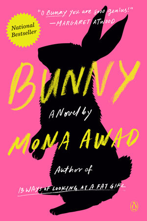
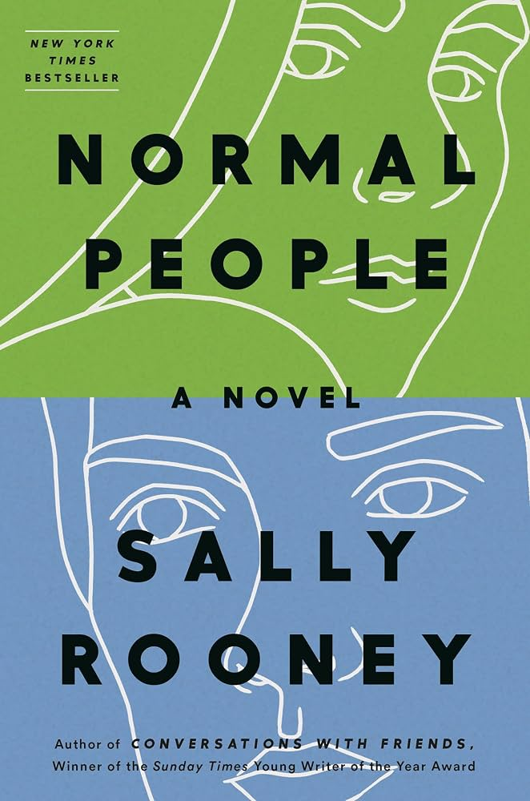
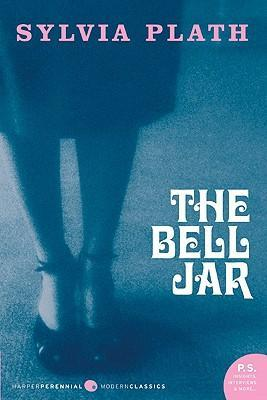
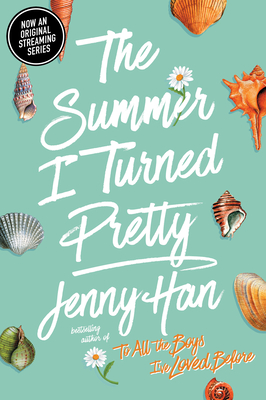
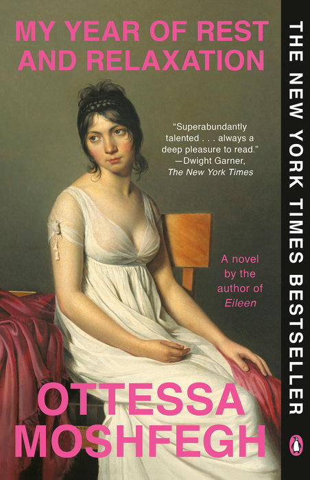
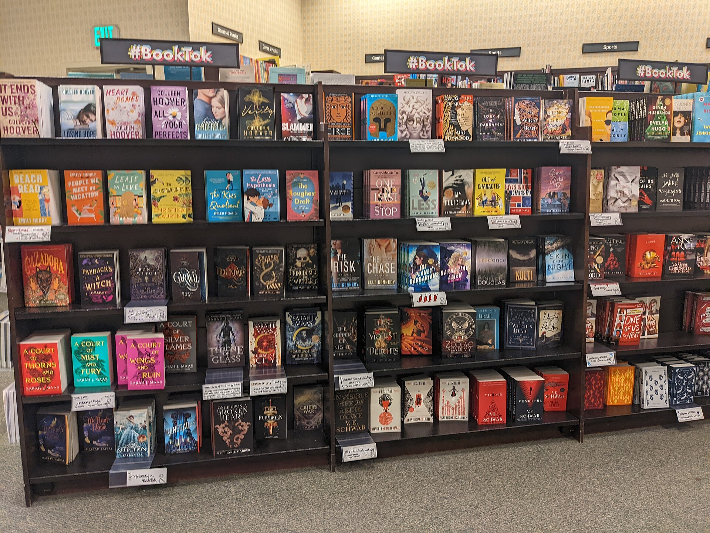
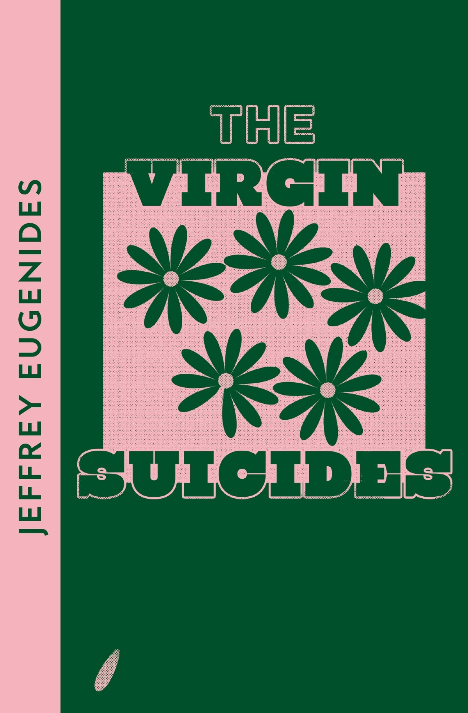

Between
the
covers
&
the scroll.
BookTok is a community on TikTok where readers share book reviews, recommendations, and reactions. Emerging in late 2019 and growing during 2020, it has helped readers discover books, connect with one another, and influence publishing and book sales.
Explore the story ↗

LOVER ♡
From the feed.
A look at the kinds of recommendations, reading lists, and reactions that circulate on BookTok. These are designed examples, not screenshots of real posts.



More than a trend.
BookTok's impact reaches beyond the screen, reshaping reading communities, publishing, and the stories that make it to film and television.
Reading together .
BookTok brings readers together to discuss books, share personal reactions, and recommend stories to others. Videos often feature book reviews, reading updates, and emotional responses to particular scenes.
This community can make reading feel more social, especially for younger audiences. The Song of Achilles by Madeline Miller is one example discussed through emotional reaction videos. Readers also discover genres and authors through recommendations from people with similar interests.
BookTok is not just about what people read—it also changes how they talk about and experience books.
The BookTok effect .
BookTok recommendations have helped books reach bestseller lists, sometimes years after their original publication. Viral attention can introduce older titles to new readers and create demand for books that might otherwise receive less publicity.
Publishers and authors have responded by creating accounts and collaborating with BookTok creators. The Atlas Six by Olivie Blake gained attention after being self-published and was later acquired by Tor Books.
Bookstores have also created BookTok displays to highlight trending titles. Online conversations now influence what readers encounter on physical shelves.

From page to screen .
BookTok discussions can extend beyond books into film and television. Popular titles are often part of conversations about casting, trailers, adaptations, and whether screen versions capture what readers loved.
Examples of screen adaptations of books popular on BookTok include The Summer I Turned Pretty, Daisy Jones & The Six, A Good Girl’s Guide to Murder, and It Ends with Us.
Adaptations existed long before BookTok, but social media gives readers another place to discuss these stories before and after their release.
On your reading list .
Explore a selection of titles discussed on BookTok, from fantasy and romance to contemporary fiction. Covers below are temporary typographic designs; this is not a popularity ranking.

A selection of books frequently discussed in online reading communities.
Sources .
Main informational text is adapted and paraphrased from the Wikipedia BookTok article. Additional image credits and publisher references will be added as the project develops.
- Wikipedia — BookTok (primary source for background, reading, publishing, adaptations, and popular titles)
- Penguin Random House (publishing and book information)
- Books Nest (visual design reference)